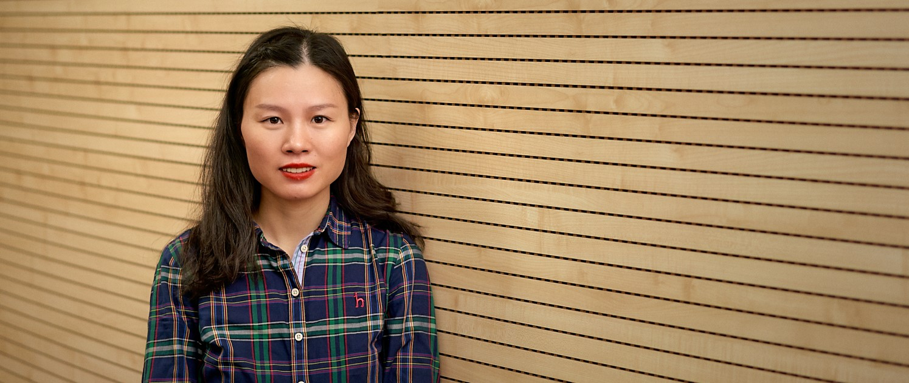

 |
|
Li Liu Center for Machine Vision and Signal Analysis, University of Oulu, Finland (Office: TS303) Li Liu received the Ph.D. degree in information and communication engineering from the National University of Defense Technology (NUDT), China, in 2012. From 2008 to 2010, she worked as a Visiting Student at the University of Waterloo, Canada, advised by Professor Paul Fieguth. From 2015 to 2016, she spent ten months visiting the Multimedia Laboratory at the Chinese University of Hong Kong, working with Professor Xiaogang Wang. From 2016.12 to 2018.9, she worked as a senior researcher at CMVS of the University of Oulu, Finland, working with Professor Matti Pietikainen. She was a cochair of nine International Workshops at CVPR, ICCV, and ECCV. She was a guest editor of special issues for IEEE TPAMI and IJCV. Her current research interests include computer vision, pattern recognition and machine learning. Her papers have currently over 2560+ citations in Google Scholar. She currently serves as Associate Editor of the Visual Computer Journal and Pattern Recognition Letter. She serves as Area Chair of ICME 2020 and ACCV 2020. |
|
Research Interests: Computer vision, pattern recognition and machine learning |
|
Email: li.liu at oulu.fi, dreamliu2010 at gmail.com |